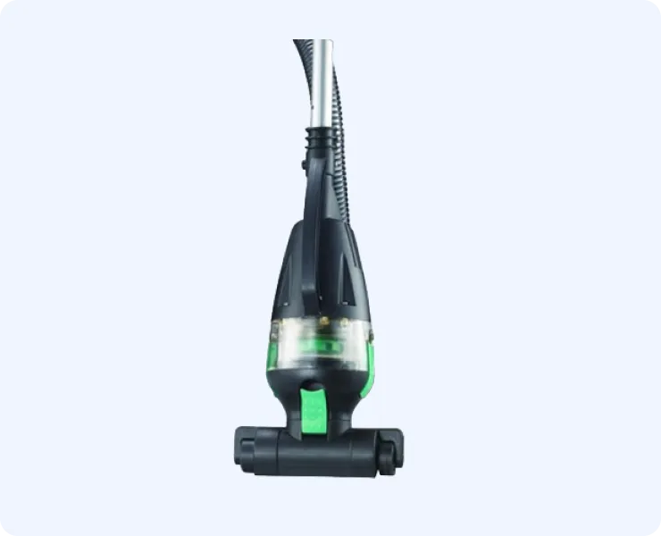

Пылесосы для водоёмов
Пылесос для пруда EC-1, 250 Вт,всас.шл.10м, глуб.погр.2.5м,9000 л/ч
Цена и наличие
- 1 шт.1 058,2 BYN / шт.В наличии
Данные на 23.11.2026.
Характеристики
- Бренд
- Jebao
- Длина всасывающего шланга
- 10 м
- Глубина погружения
- 2,5 м
- Особенности
- С пультом управления
- Размер (Ш х В), мм
- 116*26*24 мм
- Номинальное напряжение
- 220 В
- Потребляемая мощность, Вт
- 250
- Длина всасывающего шланга, м
- 10 м
- Напор
- 4,5 м
- Производительность
- 9000 л/ч
- Производитель
- Jebao
Описание
EC-1 - пылесос для пруда с пультом управления.
ПЫЛЕСОС ДЛЯ ПРУДА EC-1, С ПУЛЬТОМ УПРАВЛЕНИЯ, 9000 Л/Ч, 4,5 М НАПОР, 250 ВТ, ИННОВАЦИОННЫЙ И СУПЕРЭКОНОМИЧНЫЙ Преимущества: Всасывает частицы до 25 мм. Максимальная глубина погружения 2,5 м. Возможность увеличения глубины погружения до 5 м. Экономичный мотор – минус 50% потребления. Инновационная эффективная технология. Автоматическое отключение при работе всухую. Телескопическая ручка 1-2 м. Вы можете легко удалять мусор из вашего садового пруда. Благодаря непрерывному процессу всасывания и автоматическому опорожнению Jebao PC-1, вы можете значительно сэкономить время. Для достижения оптимальной производительности и более эффективного использования, пожалуйста, не забудьте полностью прочитать данное руководство. Используется для чистки садовых водоемов, водопадов, фонтанов и др. Удаляя со дна пруда мусор, семена растений, ил, падающие листья создает лучшие условия для жизни рыб и других обитателей пруда.
Монтаж
Монтаж: 1. Установите необходимую насадку 2. Убедитесь в том, что насадка точно встала на свое место, а фиксирующая клипса застегнута. 3. Вкрутите в корпус насоса патрубок для сливного шланга 4. Соедините телескопическую алюминиевую штангу со штангой, выходящей из корпуса насоса (вкручивается по часовой стрелке) 5. Оденьте сливной шланг на патрубок и затяните хомутом (в комплект не входит) 6. Проденьте шланг в специальные держатели, расположенные на корпусе насоса и на телескопической штанге, избегайте перегибов шланга. 7. Вращайте верхнюю часть телескопической штанги против часовой стрелки, установите необходимую длину штанги, затем вращайте по часовой стрелке, тем самым зафиксировав выбранную длину. 8. Опустите насос в воду и только затем включите в розетку 220В 9. Включение/Выключение производится нажатием зеленой ручки с кнопкой, расположенной на конце телескопической штанги 10. После окончания работы, перед тем как вынуть насос из воды, не забудьте отключить питание 220В